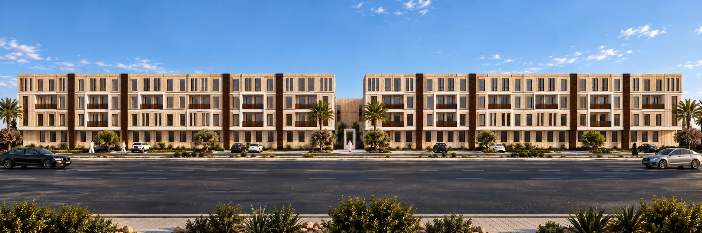
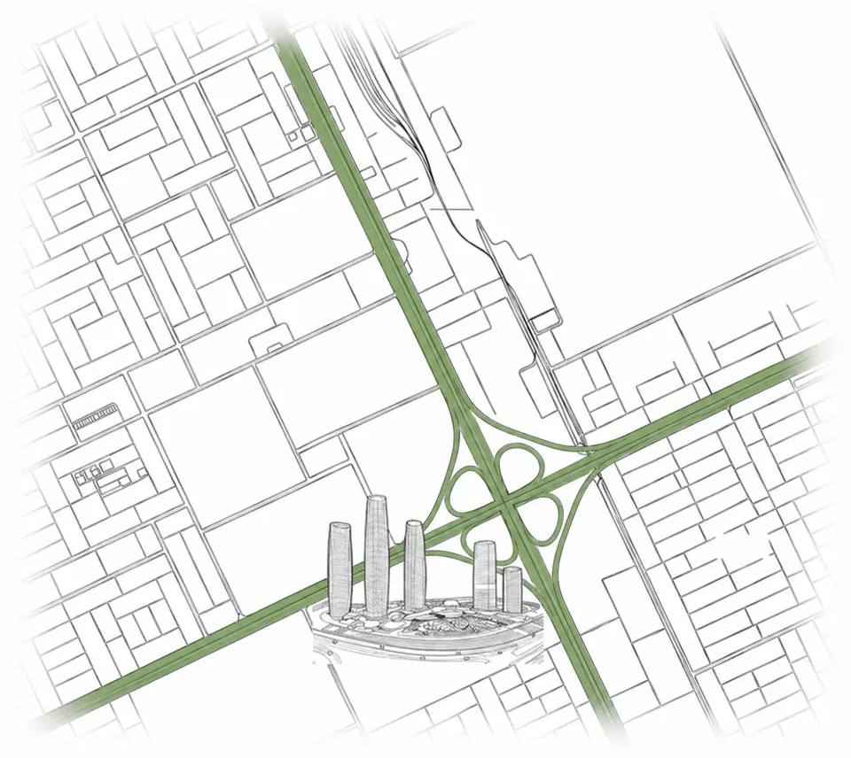

حي القيروان، الرياض / مشروع A2
مساحة لك.
وحياة من حولك.
بيتك، ومكان عملك، ولحظات راحتك.
مجتمع سكني يجمع تفاصيل يومك في مكان واحد.
01 / WATHOUBتصميم يقرّبك من الحياة.

وثوب ١ — مجتمع متكامل
248وحدة سكنية
8مبانٍ سكنية
54.5—119.54م² مساحات متنوعة
4أدوار من المرافق
01 — الفكرة
بيتك يمتدّ
خارج حدود الشقة.
ثمانية مبانٍ، يربطها ممشى مركزي ومزروعات. وفي قلبها مرافق تمنح يومك مساحة للحركة والعمل واللقاء.
من شقة بغرفة رئيسية إلى خيارات بثلاث غرف، تتنوّع الوحدات لتناسب احتياجات مختلفة؛ وبعضها يضم بلكونة أو تراسًا أو فناءً خلفيًا.
اعثر على المساحة المناسبة لك ←
02 — الوحدات السكنية
اختر المساحة
التي تشبهك.
ابحث برقم الوحدة أو حدّد احتياجاتك.
افتح المخطط، احفظ خياراتك، وقارن بينها.
03 — حياة أقرب
كل يوم،
أكثر من احتمال.
أربعة أدوار في عمارة المرافق.
من صباح نشيط إلى مساء هادئ.
04 — التصميم الداخلي
دفء الخشب.
وهدوء الألوان.
تصوّرات للمساحات الداخلية ولوحات المواد.
خامات طبيعية وألوان ترابية هادئة.
تصورات استرشادية لأسلوب التصميم؛ قد تختلف التشطيبات النهائية.
05 — التفاصيل المعمارية
حضور هادئ.
وتفاصيل تدوم.
06 — حي القيروان
في شمال الرياض.
قريب من وجهاتك.
يقع المشروع بحي القيروان، على طريق الملك فهد وطريق الأمير سلمان بن عبدالعزيز، بجوار أفنيوز الرياض.
افتح الموقع على الخريطة ↗الرياض، المملكة العربية السعودية24.838151, 46.606448

استكشف المنطقة ↗الخطوة التالية
تخيّل يومك هنا.
استكشف وحدتك، وشارك تفاصيلها مع من يهمّك.